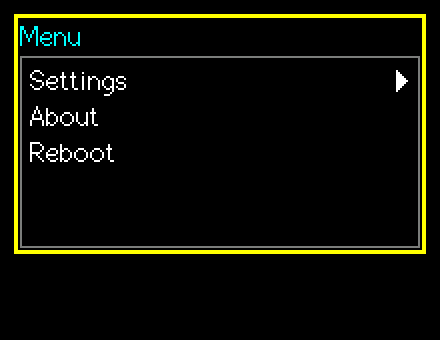
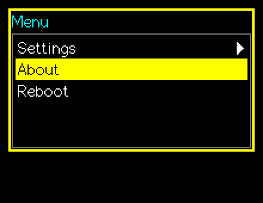

SuperMenu
Items with children open sub-menus; leaves are commands with your own id.
Editable (modal edit)src/SuperMenu.h
What it looks like


Real renders from the library (headless, dark theme, Font2, shown at 2x).
Quick start
SuperMenu m(&lcd, 10, 10, 200, &lgfx::fonts::Font2, 5, &Enc, &BtnA, &BtnB);
auto* settings = m.AddItem("Settings", 0);
m.AddItem("Brightness", 11, settings);
m.AddItem("Sound", 12, settings);
m.AddItem("About", 20);
if (m.BeginEdit()) { int id = m.GetResultId(); }Unique features
AddItem(text, id, parent); a nullptr parent is the top level. Items are pooled in a deque so pointers stay valid.- Sub-levels start with a "< Back" row (
ShowBack = falsehides it). - Grey triangles show hidden items.
- Touches are ignored for
TouchGuardMs(250) after the level changes, so a quick second touch cannot hit the Back row that just appeared.
GUI workflow
Encoder moves the cursor. A short/long opens a sub-menu or chooses a leaf. B short = back one level (cancel at the top). B long = leave from any depth.
Touch: the row under the finger highlights; slide to follow (edge hold scrolls); lift opens / chooses / goes back. Lifting over blank space does nothing; lifting off to the side or tapping outside leaves; long press = back.
Event workflow
edit contract. OnChange = the cursor or level changed; OnAccept = a leaf was chosen. Read GetResultId() / GetResultItem().
Main API
| Call | What it does |
|---|---|
AddItem(text,id,parent) | Returns the item pointer to use as a parent |
GetResultId() | Chosen leaf id, -1 if none |
GetResultItem() | Chosen item |
GetCurrentLevel() | nullptr = top level |
Clear() | Remove all items |
Tips and tricks
TipChoose ids with meaning (an enum of commands) rather than indices.
Pitfalls
Watch outA non-leaf item never returns a result; only leaves do.